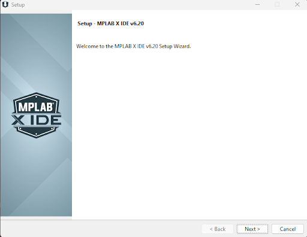
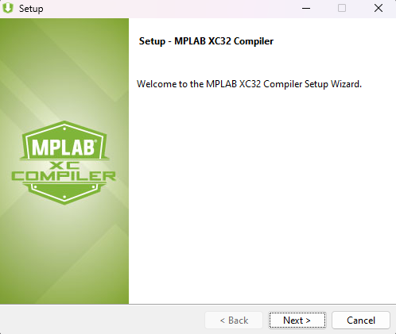
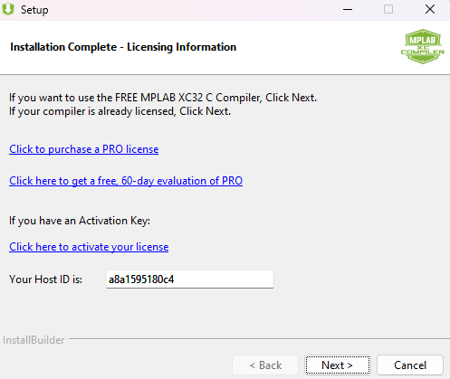
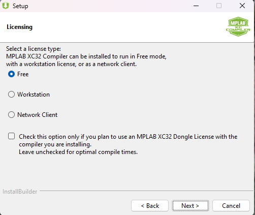

Getting Started
Required Materials
This lab requires the following materials:
- Computer capable of running MP LAB X (Windows, Linux, MacOS), further system requirements found at https://www.microchip.com/en-us/tools-resources/develop/mplab-x-ide
- Curiosity Nano AVR64DD32 board
- Micro USB to connect computer to board
Learning Objective
- How to install MP LAB X and it’s compiler
- How to connect MP LAB X to the board and install necessary libraries
- How to create a project and run code
What is MPLAB X IDE?
In this section of the course, we will be learning how to use another embedded programming program, MPLAB X IDE. MPLAB X IDE is a proprietary integrated development environment designed to work with Microchip’s line of microcontrollers. It is most commonly used in professional or settings due to its encompassing set of developer features.
Why use MPLAB X IDE over Arduino IDE?
Leading up to this lab, you have been developing relatively simple programs using Arduino IDE. So why switch over to MPLAB X IDE? The reason ultimately comes down to differences in features:
- MPLAB X IDE’s debugger offers deeper control of the chip’s embedded system with features such as register bit manipulation, breakpoints, call stack, memory monitoring, application profiling, and pin manager
- MPLAB X IDE’s project based development makes it easier to build out multi file programs than Arduino IDE’s sketch based development.
- MPLAB X IDE’s Microchip Code Configurator simplifies adding peripherals to the project instead of relying on third party libraries to configure peripherals
Installation Walkthrough (MPLAB X IDE)
- Go to the MPLAB X download page on microchips website at https://www.microchip.com/en-us/tools-resources/develop/mplab-x-ide
- Download the MPLAB X IDE installer (Windows)
- Open the installer once it has finished downloading and select next, read license agreements before proceeding. Leave the Use System Proxy settings and continue to the next screen. 
- Select the MPLAB X IDE and the 32-bit MCU package, select next and begin the installation

- Next, select the 32-bit device compiler to install next

Installation Walkthrough (MPLAB XC32 Compiler)
- The compiler install wizard should open after finishing the IDE installation process. If not, it can be found at https://www.microchip.com/en-us/tools-resources/develop/mplab-xc-compilers/xc32 
- At the licensing page, select the free license, select next, and begin the installation. 
- After installation has completed, select next. And with that, MP LAB X should be successfully installed for development with the Curiosity Nano. 
Discover Portal
In this section, we will open MPLAB Discover. It is a searchable catalog for exploring project examples, documentation, tutorials, videos, source code and other resources for microcontroller devices.
- Locate the MPLAB Discover icon in the toolbar menu.

- This will open the Discover Portal. In the search bar, type ‘AVR64DD32’ to find resources related to
the microcontroller.

Configuration
This section covers a few important configurations for using MPLAB X. Some of these configurations are recommendations and do not need to be changed.
Setting the Color Theme and Font
The default theme for MPLAB X is very bright and can be hard on the eyes, so many users prefer to change it. To adjust the theme:
- Navigate to Tools → Options → Fonts & Colors.
- Under Profile, select the theme you prefer. The recommended theme is Norway Today.
- To change the font, locate the Font section and click on the three dots.
- Select your desired font and size. The recommended font is Cascadia Code, as it matches the one used in Visual Studio Code.
Managing Embedded Toolchains
The necessary toolchains should be added automatically when MPLAB X is installed. However, you can manage them manually if needed:
- Go to Tools → Options → Embedded.
- Within the Embedded options, select Building Tools.
- You should see the XC8 compiler listed, which is the compiler we will use.
Content Manager
In this section, we will open the MCC Content Manager to update all libraries, drivers, and peripheral code related to the AVR64DD32. You need to have internet access to perform the updates.
- Locate the CM icon in the toolbar menu. Alternatively, access it by navigating to Tools -> MCC
Content Manager


- In the search filters, open the Select Device pull down menu under Device, then type AVR64DD32 to
find the microcontroller. Click on it to select.

- Click the Select Latest Version(s) button at the top center to choose the most recent versions of
the libraries.

- After performing this selection, click on Apply.

- Allow a few seconds for the libraries and drivers to download and install. Plug in your board, and
you should see the Curiosity Nano appear in your IDE!